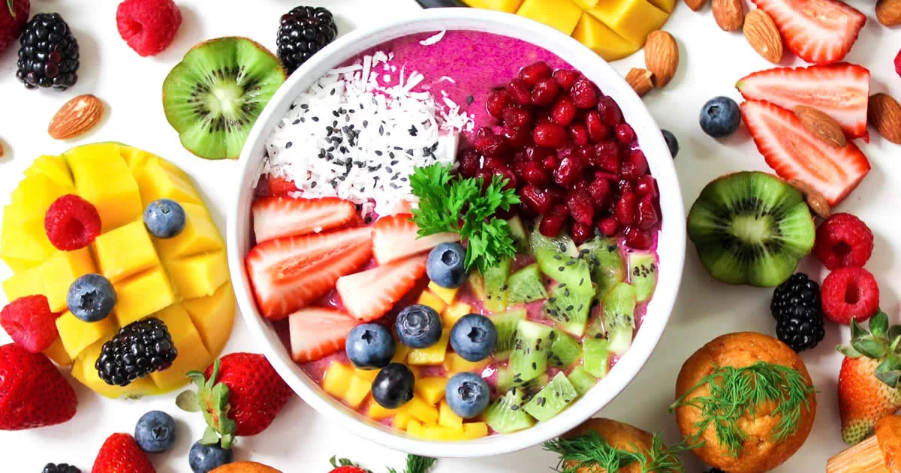
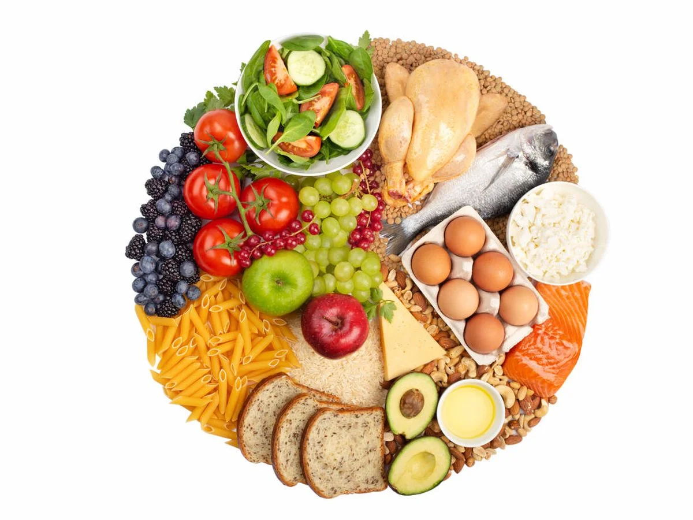
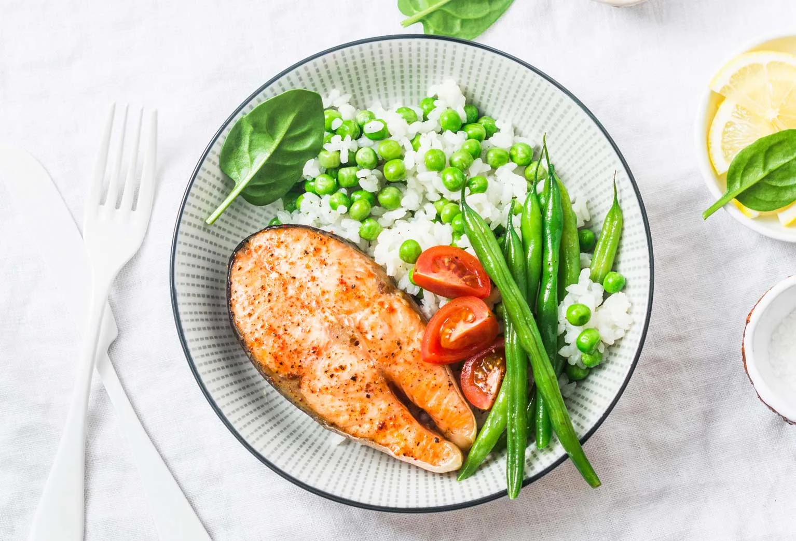

Bienvenidos a nuestra página web dedicada a la alimentación, nutrición y actividades físicas. Sabemos que llevar una vida saludable no es fácil, pero estamos aquí para ayudarte a lograrlo. En nuestra página encontrarás información y consejos prácticos sobre cómo llevar una dieta equilibrada y nutritiva, cómo diseñar una rutina de ejercicio efectiva, cómo mejorar el rendimiento deportivo y cómo cuidar tu salud y bienestar en general.
La alimentación es fundamental para nuestro organismo, pero no siempre es fácil saber qué alimentos son los más adecuados para cada uno. En nuestra página, encontrarás consejos y recomendaciones sobre cómo llevar una alimentación saludable, cómo elegir los alimentos más nutritivos y cómo evitar los alimentos poco saludables.
La nutrición deportiva es otro de los temas que abordamos en nuestra página. Si eres deportista, sabes lo importante que es la nutrición para mejorar el rendimiento y evitar lesiones. En nuestra página, encontrarás información y consejos sobre cómo planificar la nutrición para cada tipo de deporte y cómo optimizar la hidratación.
Además de la alimentación, la actividad física es fundamental para mantener un cuerpo sano y en forma. En nuestra página,
te brindamos consejos sobre cómo diseñar una rutina de ejercicios efectiva, cómo evitar lesiones y cómo adaptar la rutina
de ejercicios a tus necesidades individuales.
En nuestra página web encontrarás información y consejos prácticos sobre cómo llevar una vida saludable, tanto en términos de alimentación como de actividad física. ¡Esperamos que te sea de utilidad!

Los beneficios de las sentadillas incluyen fortalecimiento muscular de las piernas, glúteos y zona lumbar, mejora de la postura, aumento de la densidad ósea, mejora del equilibrio y coordinación, quema de calorías y mejora de la movilidad..
Last updated 3 mins ago

Qué es la alimentación y su importancia: toda la información que necesitas.
https://nestlefamilyclub.es/articulo/que-es-la-alimentacion-y-su-importancia-toda-la-informacion-que-necesitas.
Last updated 3 mins ago

Las sentadillas profundas implican un mayor rango de movimiento y activación muscular en las piernas, glúteos y zona lumbar, mejoran la flexibilidad, la estabilidad en las caderas y el equilibrio. Sin embargo, es importante realizarlas de manera correcta y progresiva para evitar lesiones en las rodillas y la cadera.
Last updated 3 mins ago

Este tipo de entrenamiento ya tiene incluso un nombre y dos buenas representantes.
Last updated 3 mins ago

Dicen que la unión hace la fuerza, pero en este caso sería más oportuno decir que «la unión os hará más fuertes». Estamos hablando de una rutina de ejercicios en la que es imprescindible realizarla acompañado por otra persona y con la que puedes entrenar cualquier parte del cuerpo..
Last updated 3 mins ago

los músculos se acostumbran a trabajar siempre bajo los mismos estímulos, por eso conviene variar nuestras rutinas y conocer también otros ejercicios que actúen sobre la musculatura de la zona..
Last updated 3 mins ago
Last updated 30 mins ago
Last updated 13 mins ago
Last updated 23 mins ago
Last updated 30 mins ago
Last updated 13 mins ago
Last updated 23 mins ago